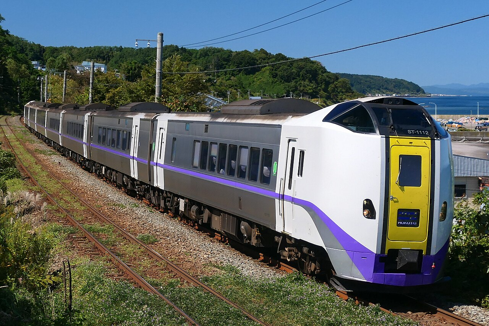
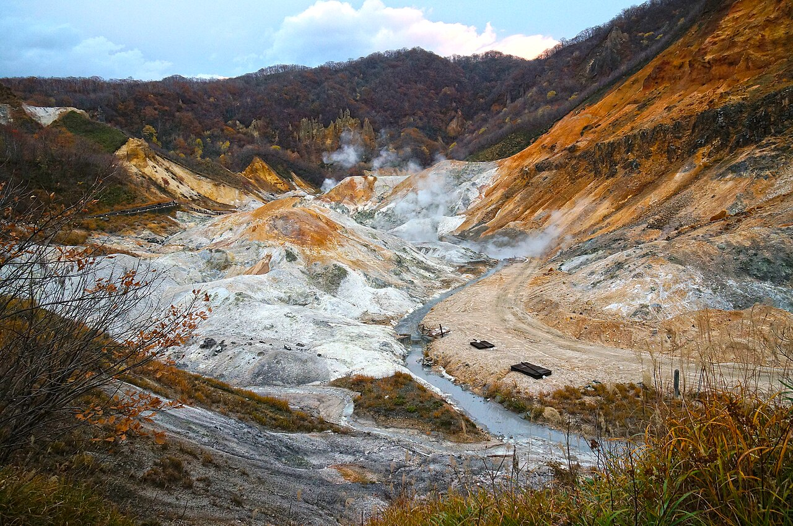

Day 10：登別市
湯気が、まず匂いで来た。地獄谷の遊歩道に立つと、硫黄の匂いが鼻の奥にすっと入ってきて、目の前の谷いっぱいに白い湯気が立ちのぼっている。灰色と赤茶けた岩肌のあちこちから、細い湯気が吹き出しては、風に流れてまた生まれる。谷の底では鉄泉池がごぼごぼと泡立ち、湯の煮える音がする気がした。11月の冷たい空気のなかで、湯気だけが温かかった。
ここへは函館から来た。函館駅8時56分発の特急北斗5号で、登別駅まで約2時間33分、7,790円。車窓には内浦湾の水面が見えて、海沿いの集落と秋の山が過ぎていく。登別駅からは道南バスで約15分、450円。駅から温泉街までの8キロの道を、バスは山へ向かって登っていく。バスを降りると、もう空気が違った。湯の匂いが、街の匂いになっている。

地獄谷は、約1万年前に日和山が噴火してできた爆裂火口の跡だ。直径およそ450メートル、面積は約11ヘクタール。谷のあちこちに湧出口と噴気孔があって、昭和地獄、龍巻地獄、鉛地獄、鉄砲地獄など、大きさも色も違う15の地獄が並んでいる。2004年に北海道遺産に選ばれた。ここから湧く湯は1日1万トン、泉質は9種類。硫黄泉、食塩泉、鉄泉、明礬泉——ひとつの谷からこれだけ違う湯が出るので、「温泉のデパート」と呼ばれる。地名の「登別」はアイヌ語の「ヌプル・ペツ」、水色の濃い川という意味だという。1858年、硫黄を掘っていた岡田半兵衛が共同湯を作ったのが、温泉街のはじまりだ。

私の家は今、湿気と戦っている。台所の床がデコボコして、カビが広がって、湿度は67から72パーセント。雨樋や排水溝を点検する予定を立てたばかりだ。だから登別に来て、最初に戸惑った。ここでは湯気が、直すものではなく、街の宝物なのだ。湯が湧くから人が集まり、旅館が並び、鬼までが番人になった。温泉街の鬼祠には、江戸時代から伝わる念仏鬼像が祀られている。赤鬼と青鬼がその両脇に立って、湯を守っている。節分の湯まつりには、エンマ大王の使いの湯鬼神が旅館や店を回って、街の厄を集めて持ち帰るという。怖いもののはずの鬼が、ここでは湯の守り神だ。湿気を追い出すことばかり考えていた私には、湯気と一緒に暮らすという発想がなかった。
谷を出るとき、振り返ると湯気の向こうに赤茶けた岩肌が見えた。湯の音と硫黄の匂いが、まだ体に残っている気がした。家に帰ったら、湿気のことをもう一度考えてみようと思う。追い出すだけが答えではないのかもしれない。湯気のなかで、家は湯気と折り合いをつけることを覚えた街だった。
出典：Wikipedia「登別温泉」「地獄谷 (登別市)」、北海道遺産「登別温泉」、JRグループ「特急『北斗』『すずらん』時刻表」、NAVITIME「函館から登別 時刻表」、登別国際観光コンベンション協会「第48回登別温泉湯まつりプログラム」。
💬 コメント